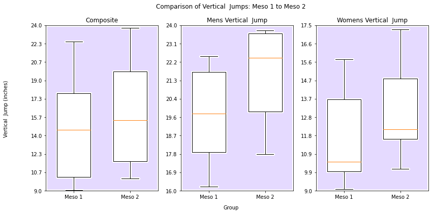
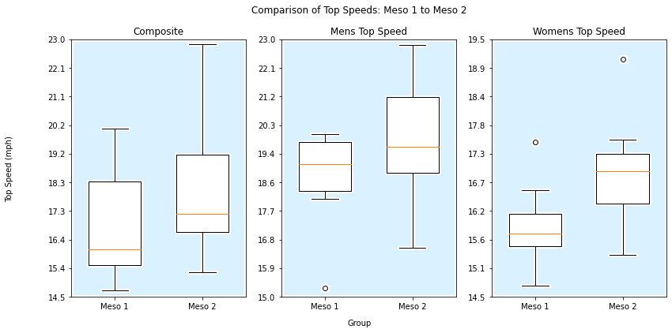
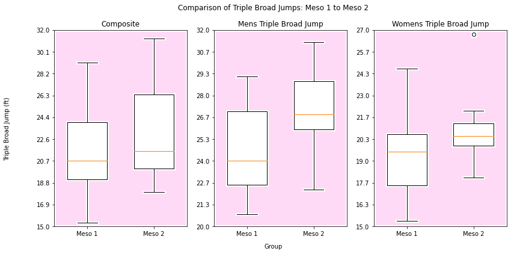

The Compiled 2023 Data for our two primary metrics: the Fly 10 and the Triple Broad Jump. Each metric has its own tab.
Tapping on a data point (or hovering on desktop) will give more information.
Our Progress as a Team, visualized as boxplots between each 4-week mesocycle.
  